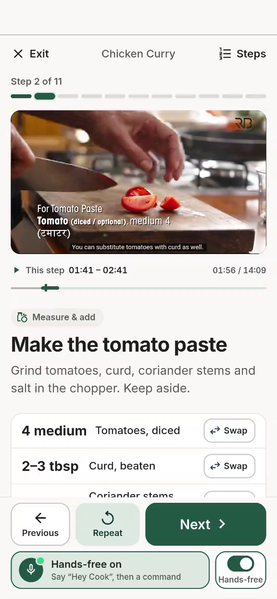
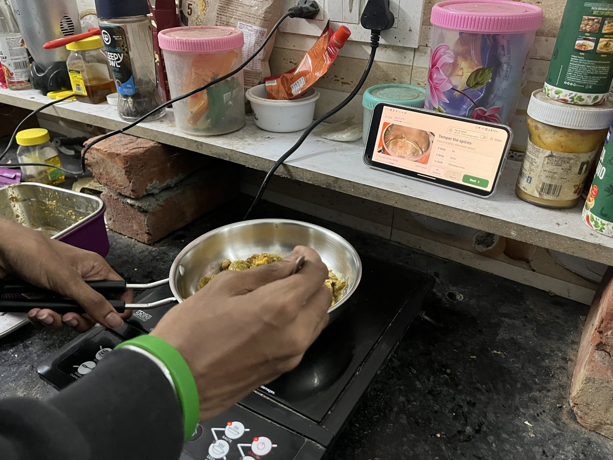
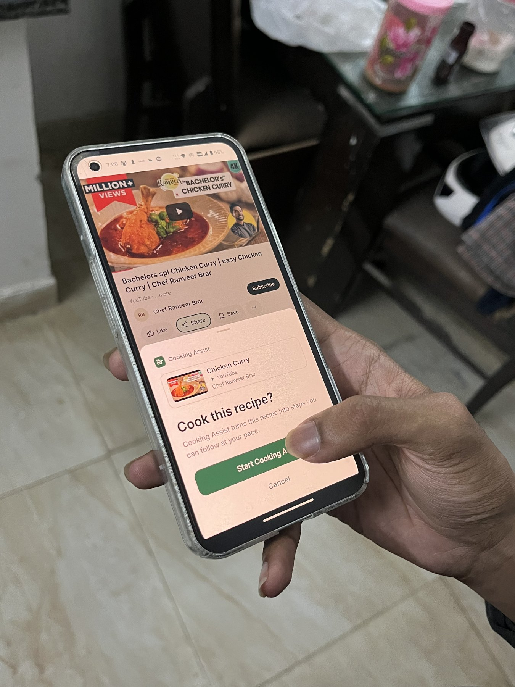
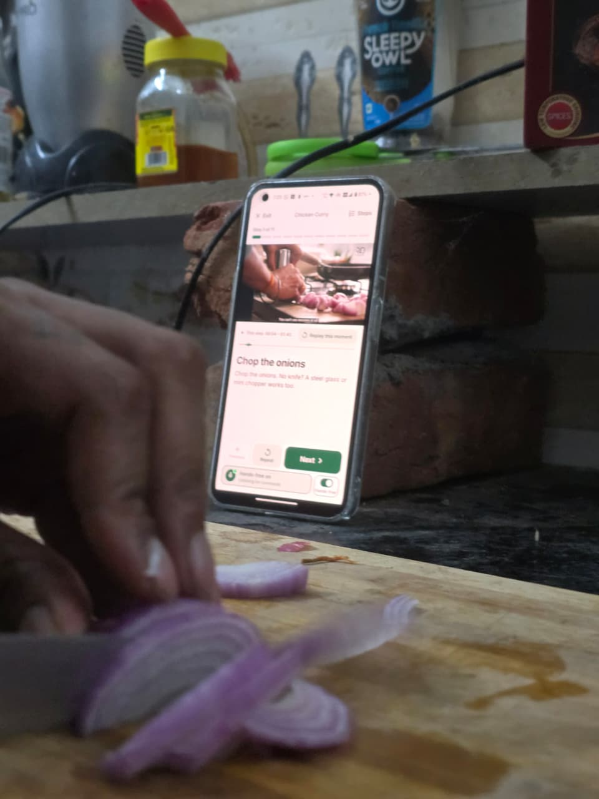
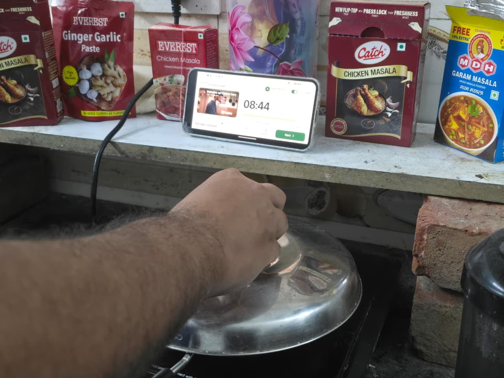
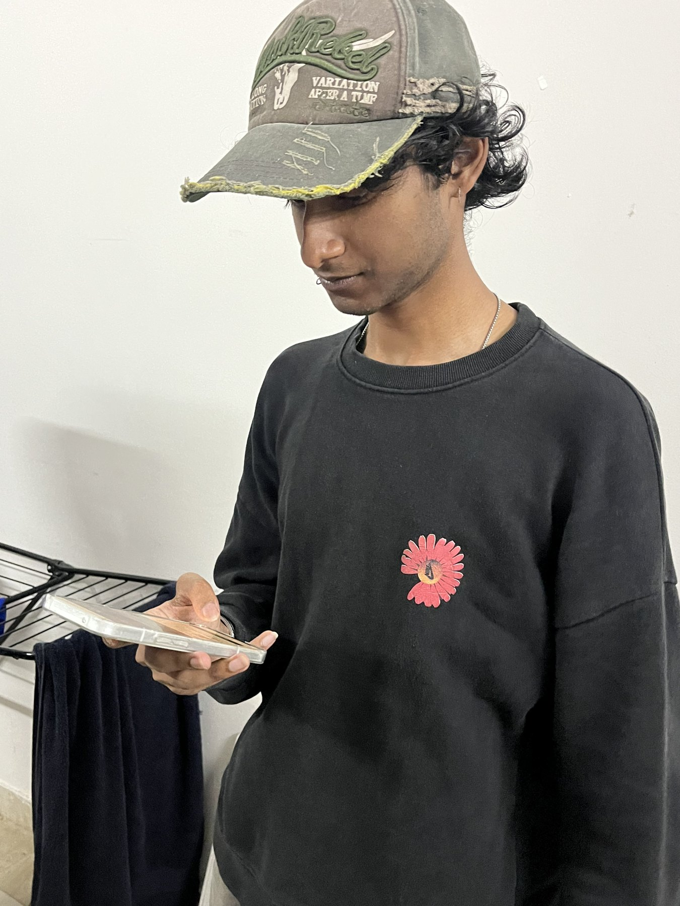
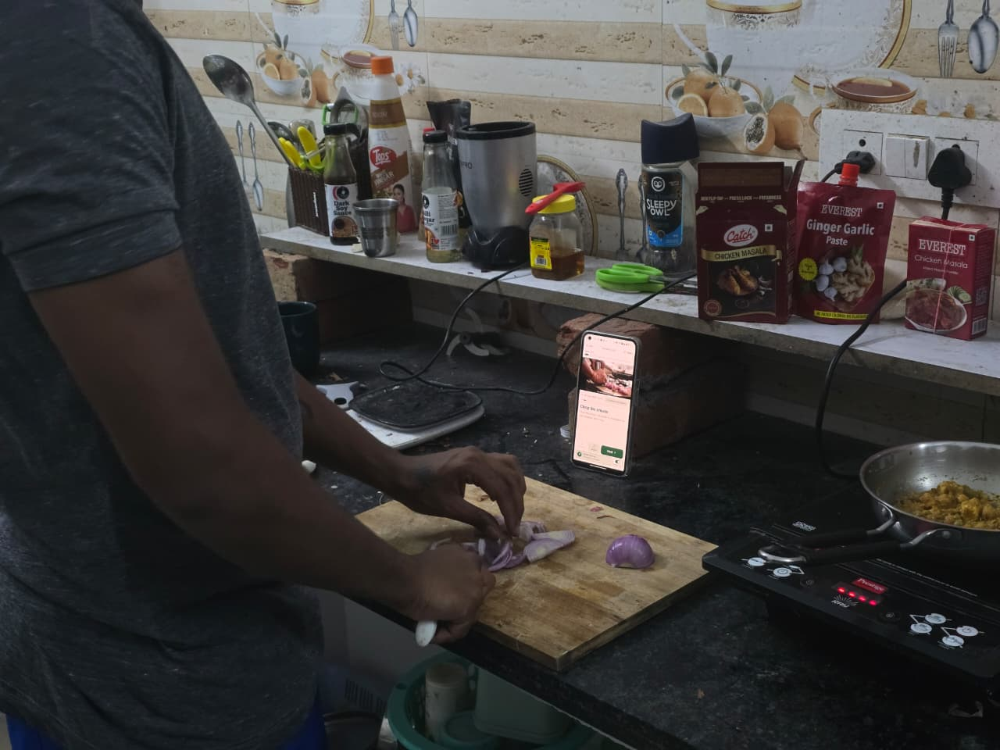

“{{ f.said }}”
{{ f.now }} {{ f.why }}- Role
- Solo: research, interaction design and a working prototype
- Course
- Inclusive Design, B.Des Semester 7, 2026
- Methods
- 3 interviews, a survey of 20, literature, cooking tests with 6
Overview
Many people learn to cook from YouTube, then fight the video with turmeric on their fingers. Cooking Assist keeps the video they picked and breaks it into steps that move only when they do.
This case study is written like the recipe it produced: prep, cook, then a taste test.
Prep: Discover
Measure before you cook.
What do people do with a recipe video while they cook, and where does it break?
I started from how people already cook with videos
Before any screens, I gathered four kinds of evidence. Two of them are mine; the other two are someone else’s work, labelled as such.
Most cooks stop, rewind and touch the phone with messy hands
Fifteen of twenty wipe, wash or hunt for a clean finger just to touch the screen.
{{ j.n }}/20
{{ j.t }}
“Miss one and you have to use dirty hands to rewind.”
Survey response
The video runs on the creator’s clock, not the cook’s
The 14-minute chicken curry I tested with takes about 35 minutes at the stove. The waiting steps are the ones the video cuts shortest.
On screen
At the stove
{{ c.name }}{{ c.sub }}
{{ c.vl }}
{{ c.sl }}
010 min20 min30 min
Dirty hands were a symptom. The recipe moved at the creator’s pace, not the cook’s.
So I kept the video people already chose, and split it into steps that wait.
Cook: Design
Keep their video, and make it wait for them.
Not a recipe app: no feed, no login and no chatbot. Only the next step, when the cook is ready for it.
From YouTube’s share menu, through the recipe and back
Cooking Assist sits inside a habit people already have. It opens from Share, prepares the steps in a few seconds, and hands the cook back to YouTube when the curry is done.
-
{{ f.t }}{{ f.d }}
Four ideas I crossed out on the way
Each was dropped for a reason I could name. The corrections in green are what the prototype does now.
Every part of a step screen does a job for busy hands
I designed for the situational column of the ability table: hands full, a noisy kitchen, attention split between the pan and the phone.

The layout changes with what the hands are doing
Each of the 11 steps is tagged by what it asks of the cook. The tag decides what gets the most room on the screen.
{{ typeSel.big }} of 11 steps
{{ typeSel.line }}
{{ typeSel.d }}
Hands-free means it acts only after “Hey Cook”
An offline Indian-English model runs in the browser and listens for this recipe’s commands, so the mic can stay open without beeps. Open questions fall back to Chrome’s speech recognition.
The follow-up window
8 seconds to chain commands
{{ w.t }}
0 s4 s8 s12 s
After the window closes, a bare “Next” is ignored, so talk at the stove doesn’t move the recipe.
The voice bar says what it heard
{{ v.t }}{{ v.d }}
Every answer says whose advice it is
Swaps the chef gives in his video are marked “From recipe”. Anything I wrote is marked “Not from the original recipe”, so a cook knows whom they’re trusting.
From recipe
Use ¾ cup curd instead of the tomatoes.
9swaps the chef gives in the video, kept as his advice
Not from the original recipe
Use ½ tbsp ready ginger-garlic paste.
13swaps I wrote as general cooking advice, labelled every time
Taste test: Evaluate
Six cooks, one curry, one hostel kitchen.
Students who cook three or four times a week made the same chicken curry, with the prototype propped beside the stove.
Tested where the problem lives, next to the stove
Phone on the spice shelf, hands on the pan, and dinner at the end. Every session started from YouTube’s share sheet.






Voice was hit and miss. The big buttons weren’t.
Four of six cooked the dish start to finish. Nobody stopped to wash their hands before touching the phone.
{{ r.t }}
{{ r.v }}
Three changes after tasting, each from something cooks said
What one curry can tell me, and what it can’t
What I can’t claim yet
{{ c }}
What I’d cook next
{{ c }}
Next project
OLX Redesign, usability study, 2026
Keeping the deal on screen, so buyers and sellers stop haggling from memory
Read case study